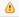
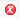

To validate the schema must first know the 3 levels of severity:
- Info
> Generally useful information. Info I want to always have available but usually don't care about under normal circumstances.
- Warning

> Minor user-level exceptions that are not expected during normal processing.
- Error

> Error is used to log all unhandled exceptions diagram.